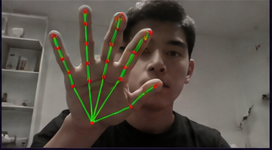
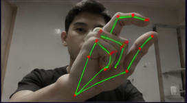
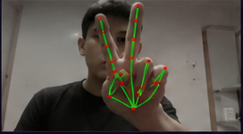
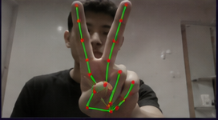
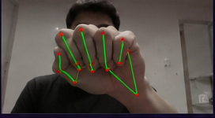

Mover
Mão aberta, palma na câmera. O cursor segue um ponto estável da mão (a famosa base do médio). Movimentos lentos = controle fino. Amplos = travessia rápida da tela.
Esse projeto pega o stream da sua webcam, joga em um modelo de visão computacional e transforma cada microgesto da mão em comando real do cursor. Mover, clicar, arrastar, pausar. Sem hardware extra. Sem GPU. Sem treinar modelo.
É menos mágico do que parece. E muito mais útil do que aparenta.
funciona com a câmera suja do notebook. testado.
A maioria dos projetos de hand tracking morre no GIF do README. Esse continua de pé quando a luz está ruim, quando a câmera está suja, e quando a mão já cansou de demonstrar para você. ↳ testado em sessões reais, não em vídeo promocional.
Roda a 58 FPS estáveis no processador que você já tem. Sem CUDA, sem placa dedicada, sem tensorrt. Se o seu notebook abre o Chrome com vinte abas, ele dá conta disso aqui também.
State machine própria, filtro adaptativo OneEuro implementado do paper original, decisões de âncora de cursor defendidas linha a linha. Não é wrapper. É opinião feita em código.
Cada frame da webcam passa por cinco estágios. Tudo assíncrono, tudo em CPU. O design prioriza FPS estável, latência baixa e sobrevivência a tremor natural da mão.
Thread dedicada lê a webcam com buffer mínimo e descarta frames atrasados. Não dá pra trabalhar com 25 FPS bloqueante.
21 pontos 3D da mão, com confiança por landmark. O modelo é da Google, a interpretação é nossa.
Histerese de 2/3 frames na entrada e saída. Sem ela, qualquer ruído vira clique fantasma.
Filtragem agressiva em repouso, liberada em movimento. EMA com α fixo é solução preguiçosa. Recomendamos não usar.
Comando absoluto de cursor. Press-to-click por edge detection no shape. O clique acontece no instante do toque dos dedos.
Cada um foi escolhido com dois critérios: deve sobreviver ao tremor da sua mão e não pode ser confundido com outro. Se você está pensando “e o gesto X”, a resposta é provavelmente: testamos, falhou, fora.

Mão aberta, palma na câmera. O cursor segue um ponto estável da mão (a famosa base do médio). Movimentos lentos = controle fino. Amplos = travessia rápida da tela.

Encosta o polegar no indicador. O clique acontece no toque, não no release. Diferença prática: zero latência percebida.

Polegar encosta no dedo médio, com indicador estendido. Abre o menu de contexto sem confundir com o clique esquerdo. O indicador é a chave da desambiguação.

Sinal de paz mantido por meio segundo. O delay é proposital: tem que ser intencional, senão dispara sozinho enquanto você só queria apontar.

Punho fechado congela o cursor. Útil para reposicionar a mão (e o braço) sem o cursor surfar pela tela junto. Soltar o punho retoma o tracking.
Pinça polegar–indicador mantida por 1.5 segundos inicia o modo arrastar. Funciona com janelas, ícones, seleção de texto. Abrir a mão libera no destino. Não tem cursor de seta puxando — tem a sua mão puxando.
Aperta H em runtime e uma mão holográfica azul-ciano aparece sobreposta ao desktop. Acompanha cada movimento da sua mão real captado pela webcam. Click-through nativo — não bloqueia nenhuma interação.
antes de começar, garante que:
Abre um terminal (PowerShell, CMD, terminal do VS Code, tanto faz) na pasta onde quer guardar o projeto.
git clone https://github.com/ognistie/ai-virtual-mouse-controller.git
cd ai-virtual-mouse-controllerIsola as dependências. Evita que esse projeto brigue com outros Python no seu sistema. Se você nunca usou venv, é literalmente uma pastinha local com seu próprio Python.
py -3.11 -m venv .venv
.\.venv\Scripts\Activate.ps1no CMD: .\.venv\Scripts\activate.bat · no macOS/Linux: source .venv/bin/activate
Versões fixadas e testadas. Não troca por “última versão” por sua conta — MediaPipe gosta de quebrar API entre minor versions.
pip install --upgrade pip
pip install -r requirements.txtUma janela 480×270 abre no canto inferior direito da tela. Coloca a mão a uns 50 cm da câmera, palma pra frente. ESC sai quando você quiser.
python main.pyMapeamos os incidentes mais comuns, com causa e antídoto. Se nada aqui resolve, abre uma issue no repositório — colado o erro completo do terminal, por favor.
pip install mediapipe falha com Could not find a version that satisfies the requirement
O que está acontecendo: sua versão de Python é nova demais (3.13+) ou velha demais. MediaPipe suporta 3.8 até 3.12 hoje.
Antídoto:
python --version.py -3.11 -m venv .venv.pip install -r requirements.txt de novo.ModuleNotFoundError: No module named 'cv2' ou 'mediapipe'
O que está acontecendo: ou o venv não está ativo, ou as deps foram instaladas em outro Python sem você notar.
Antídoto:
(.venv) antes do diretório. Se não mostra, ative: .\.venv\Scripts\Activate.ps1.pip install -r requirements.txt com o venv ativo.python -c "import cv2, mediapipe; print('ok')".Cannot open camera
O que está acontecendo: outro aplicativo está segurando a câmera, ou o Windows bloqueou o acesso por privacidade.
Antídoto:
CAMERA_INDEX no config.py pra 1 ou 2.Activate.ps1 cannot be loaded because running scripts is disabled
O que está acontecendo: política padrão do PowerShell bloqueia scripts não assinados. Inclui o de ativação do venv.
Antídoto: abre o PowerShell e roda (confirma com S quando perguntar):
Set-ExecutionPolicy -ExecutionPolicy RemoteSigned -Scope CurrentUserAltera só o seu usuário. Sistema continua seguro. Reabre o terminal e tenta de novo.
O que está acontecendo: o modelo está configurado em qualidade máxima e o seu CPU não dá conta. Ou está em throttling térmico (notebook na bateria).
Antídoto:
config.py, troca MODEL_COMPLEXITY = 1 por MODEL_COMPLEXITY = 0.CAMERA_WIDTH = 640 e CAMERA_HEIGHT = 360.O que está acontecendo: ruído no tracking. Geralmente é iluminação ou fundo confuso.
Antídoto:
S e troca pro perfil stable.pyautogui.FailSafeException ao mover pro canto
O que está acontecendo: o PyAutoGUI tem um failsafe — se o cursor vai pro canto superior esquerdo, ele aborta. É proposital, protege contra loops descontrolados.
Antídoto: reposiciona a mão no centro da câmera e reinicia. Se você está fazendo desenvolvimento e quer desativar (não recomendado pra uso normal), adiciona pyautogui.FAILSAFE = False no main.py.
AttributeError: module 'mediapipe.solutions' has no attribute 'hands'
O que está acontecendo: a partir do MediaPipe 0.11 a API legada mp.solutions.hands foi removida. Você instalou uma versão nova demais.
Antídoto: força a versão certa.
pip install "mediapipe>=0.10.9,<0.11"Confere com pip show mediapipe.
'git' is not recognized ou git: command not found
O que está acontecendo: você não tem Git instalado, ou ele não está no PATH.
Antídoto: baixa em git-scm.com, instala com as opções padrão, reabre o terminal. Alternativa rápida: baixa o ZIP direto da página do GitHub. Funciona igual.
O que está acontecendo: o PySide6 não está instalado. O holograma é opt-in — sem ele, o projeto roda normal, mas a tecla H não tem efeito visual.
Antídoto:
pip install PySide6.python main.py de novo.[AVM] HologramOverlay criado: available=True.Se available=False aparecer mesmo com PySide6 instalado, copia o WARNING completo e abre uma issue.
— e se você chegou até aqui
O código está aberto. A licença é MIT. Se você achar um bug, é provável que a gente concorde com você. Se achar um gesto melhor, abre PR. Se rodar isso e quiser contar como foi — abre uma issue, vamos ler.